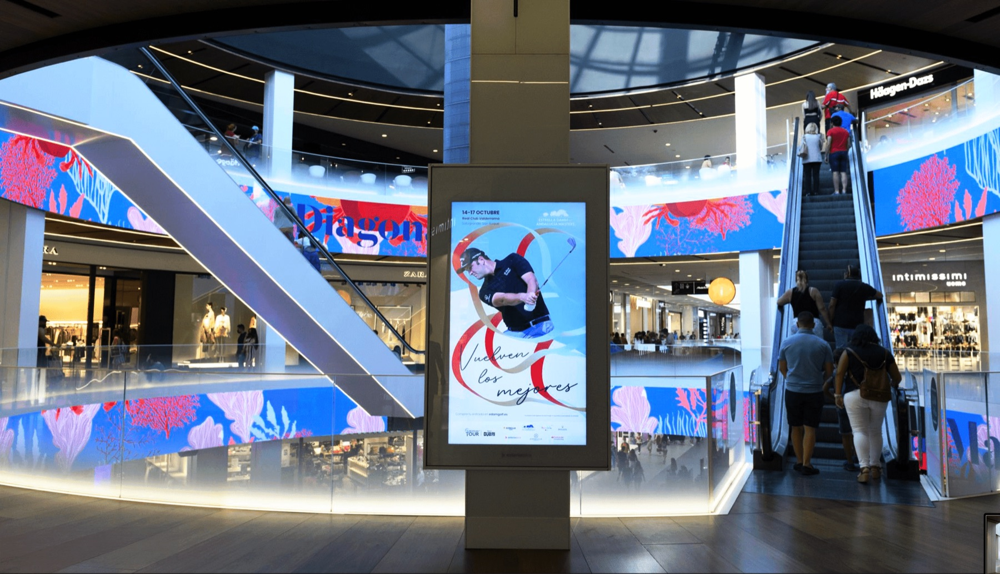
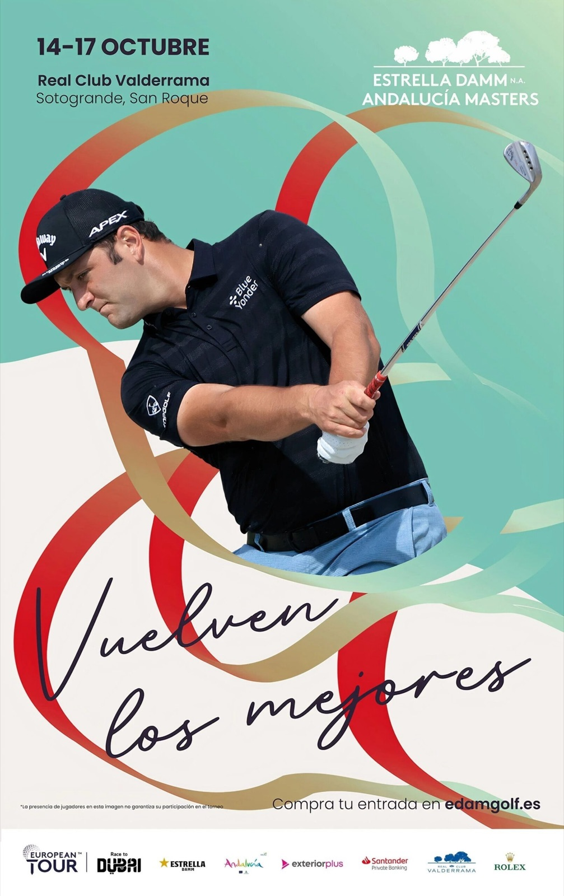
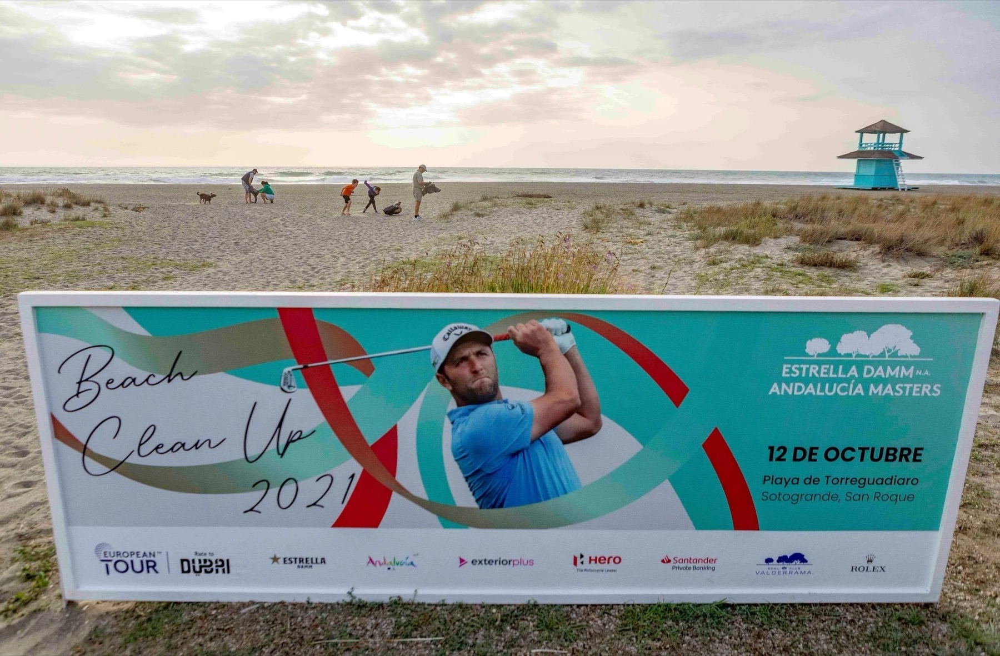
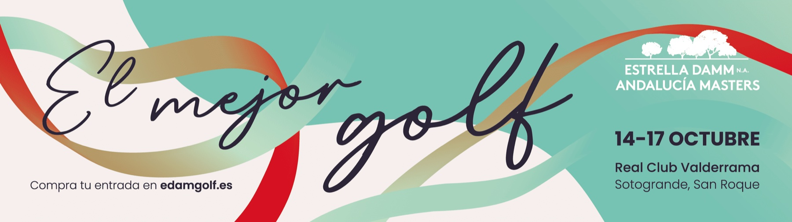
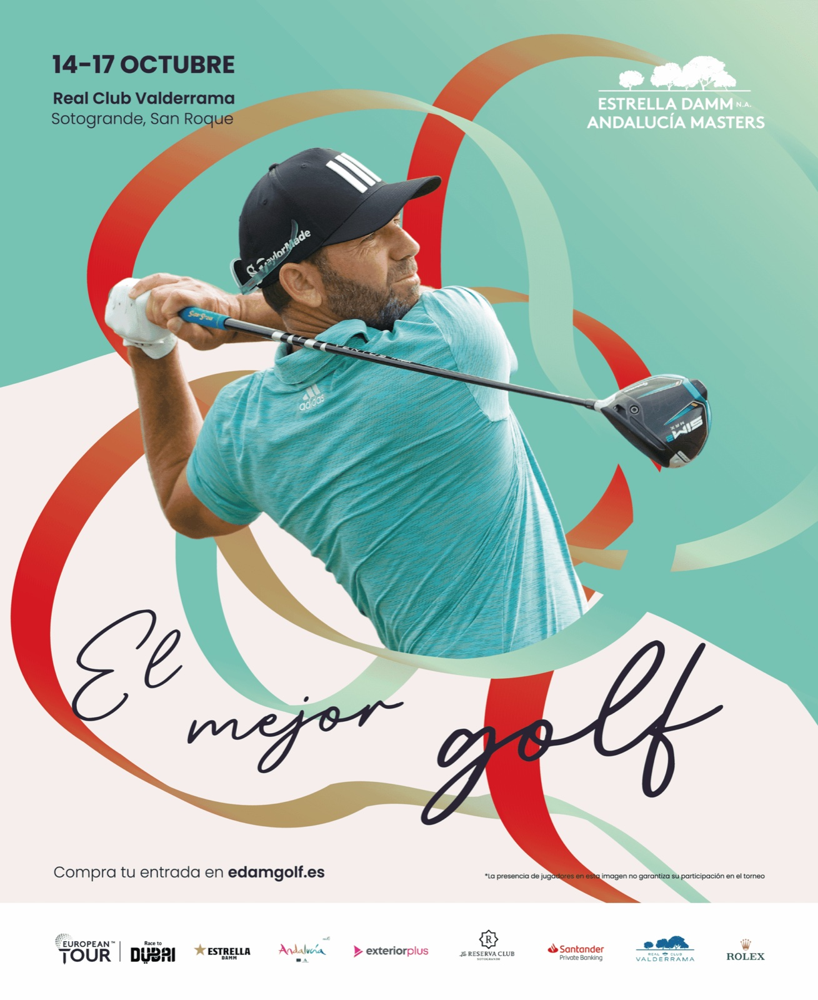

01
Deporte · Identidad · Campaña · Digital · Social · Offline
Estrella Damm N.A.
Andalucía Masters





Para esta edición del Andalucía Masters desarrollé la identidad visual de la campaña, desde el concepto gráfico hasta todas sus adaptaciones.
La identidad tenía que funcionar en diferentes soportes y mantener su coherencia desde el entorno digital hasta los soportes físicos del evento.
Mi papel — Concepto e identidad visual de la edición + diseño y adaptación de las diferentes piezas de campaña.